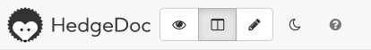
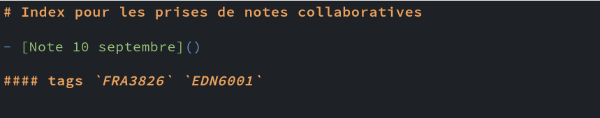
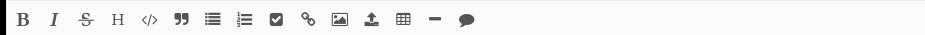
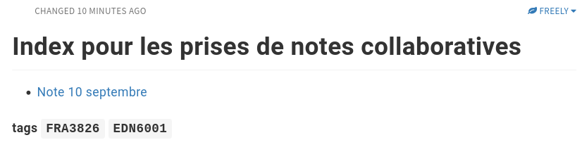
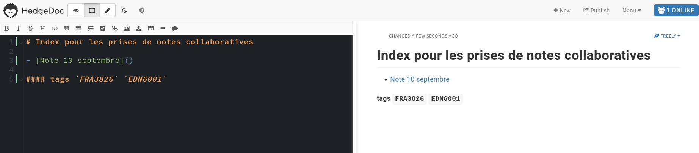

Documentation #
La page de documentation référence les ressources utiles au cours dont des vidéos explicatives sur l’usage des outils.
Hypothesis #
Zotero #
HedgeDoc #
HedgeDoc est un espace pour l’écriture collaborative et synchrone.
Cet espace se structure selon 2 espaces :

Espace d’édition #

C’est dans cet espace que vous pourrez éditer.
L’édition d’une note peut être effectuée via l’éditeur visuel :

ou directement en Markdown dans le texte.
Espace de visualisation #

Cet espace n’est pas éditable mais permet un rendu type web.
Double configuration #

Afin de suivre en simultané le rendu de votre édition vous pouvez choisir la double configuration.
Index des notes collaboratives #
L’index pour les prises de notes collaboratives se trouve ici.
Markdown #
Markdown est un langage sémantique.
Voici les fondamentaux :
Niveaux de titre #
Les niveaux de titre se notent avec l’utilisation du dièse :
## Titre de niveau 2
### Titre de niveau 3
Italique et gras #
- *italique*
- **gras**
- ***gras italique***
Notes #
Voici mon texte^[une note de bas de page inline.]
Voici mon texte[^1]
[^1]:Une note de bas de page avec appel et renvoi
Liens #
[un lien vers une page Wikipédia](https://fr.wikipedia.org/wiki/Hyperlien)
Image #

Stylo #
-------------------------Wikipédia #
(à venir)